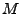
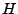
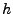

Next: Running a Program Analysis
Up: Chord: A Static and
Previous: Setting up a Java
Building Analysis Scope
Chord computes the analysis scope (i.e., reachable classes and methods) of the given program
either if property chord.build.scope is set to true or if some other task (e.g.,
a program analysis specified via property chord.run.analyses) demands it by
calling method chord.program.Program.v().
The algorithm used to compute the analysis scope is as follows.
- If property chord.reuse.scope has value true and the files specified by properties
chord.classes.file and chord.methods.file exist,
then Chord regards those files as specifying the classes and methods, respectively,
to be regarded as reachable. The format
of the classes file is a fully-qualified class name per line (e.g., foo.bar.Main). The format
of the methods file is an entry of the form <method name>:<method descriptor>@<class name> per line,
specifying the method's name, the method's descriptor, and the method's declaring class
(e.g., main:([Ljava/lang/String;)V@foo.bar.Main).
The default value of property chord.reuse.scope is false, and
the default values of properties chord.classes.file and chord.methods.file are
[chord.out.dir]/classes.txt and [chord.out.dir]/methods.txt, respectively,
where property chord.out.dir defaults to [chord.work.dir]/chord_output/,
and property chord.work.dir defaults to the current working directory.
- If property chord.reuse.scope has value false or the file specified by
property chord.classes.file or chord.methods.file does not exist,
then Chord computes the analysis scope
using the algorithm specified by property chord.scope.kind and
then writes the classes and methods deemed reachable by that algorithm to those files.
The possible legal values of property chord.scope.kind are [dynamic rtarta_reflectcha].
In each case, Chord at least expects properties chord.main.class and chord.class.path
to be set.
rtarta_reflectcha].
In each case, Chord at least expects properties chord.main.class and chord.class.path
to be set.
- The dynamic value instructs Chord to compute the analysis scope dynamically, by running the program
and observing using JVMTI the classes that are loaded at run-time.
The number of times the program is run and the command-line arguments to be supplied to
the program in each run is specified by properties chord.run.ids and
chord.args.<id> for each run ID <id>. By default, the program is run only once, using run ID 0,
and without any command-line arguments.
Only classes loaded in some run are regarded as reachable but all methods of each loaded class are regarded
as reachable regardless of whether they were invoked in the run.
The rationale behind this decision is to both reduce run-time overhead of JVMTI and to increase the
predictive power of program analyses performed using the computed analysis scope.
- The rta value instructs Chord to compute the analysis scope statically using Rapid Type Analysis (RTA).
In this case, no attempt is made to resolve reflection.
RTA is an iterative fixed-point algorithm. It maintains a set of reachable methods .
The initial iteration starts by assuming that only the main method in the main class is reachable
(Chord also handles class initializer methods but we ignore them here for brevity; we also ignore
the set of reachable classes maintained besides the set of reachable methods).
All object allocation sites  contained in methods in are deemed
reachable (i.e., control-flow within method bodies is ignored). Whenever a dynamically-dispatching
method call site (i.e., an invokevirtual or invokeinterface site) with receiver of static
type  is encountered in a method in , only subtypes of whose objects are allocated at some site in
are considered to determine the possible target methods, and each such target
method is added to . The process terminates when no more methods can be added.
is encountered in a method in , only subtypes of whose objects are allocated at some site in
are considered to determine the possible target methods, and each such target
method is added to . The process terminates when no more methods can be added.
RTA is a relatively inexpensive and precise algorithm in practice. Its key shortcoming is that it makes
no attempt to resolve reflection, which is rampant in real-world Java programs, and can therefore be
unsound (i.e., underestimate the set of reachable classes and methods).
The next option attempts to overcome this problem.
- The rta_reflect value instructs Chord to compute the analysis scope statically using Rapid Type Analysis
and, moreover, to resolve a common reflection pattern:
String s = ...;
Class c = Class.forName(s);
Object o = c.newInstance();
T t = (T) o;
This analysis is identical to RTA except that it additionally inspects every cast statement in the program,
such as the last statement in the above snippet,
and queries the class hierarchy to find all concrete classes that subclass T (if T is a class)
or that implement T (if T is an interface).
Chord allows users to control which classes are included in the class hierarchy (see below).
- The cha value instructs Chord to compute the analysis scope statically using Class Hierarchy Analysis (CHA).
The key difference between CHA and RTA is that for invokevirtual and invokeinterface sites with receiver of
static type , CHA considers all subtypes of in the class hierarchy to determine the possible
target methods, whereas RTA restricts them to types of objects allocated in methods deemed reachable so far.
As a result, CHA is highly imprecise in practice, and also expensive since it grossly overestimates the set
of reachable classes and methods.
Nevertheless, Chord allows users to control which classes are included in the class hierarchy (see below)
and thereby control the precision and cost of CHA.
The default value of property chord.scope.kind is rta.
The class hierarchy is built if property chord.scope.kind has value rta_reflect or cha.
Users can control which classes are included in building the class hierarchy by setting property chord.ch.kind,
whose possible legal values are [staticdynamic].
Chord first constructs the entire classpath of the given program by concatenating in order the following
classpaths:
- The boot classpath, specified by property sun.boot.class.path.
- The library extensions classpath, comprising all jar files in directory [java.home]/lib/dir/.
- Chord's classpath, specified by property chord.main.class.path.
- The classpath of user-defined Java analyses, specified by user-defined property chord.java.analysis.path
(it is empty by default).
- The classpath of the given program, specified by user-defined property chord.class.path
(it is empty by default).
All classes in the entire classpath (resulting from items 1-5 above) are included in the class hierarchy
with the following exceptions:
- Duplicate classes, i.e., classes with the same name occurring in more than one classpath element;
in this case, all occurrences except the first are excluded.
- All classes in Chord's classpath are excluded, i.e., all classes in the classpath specified by property chord.main.class.path,
such as those in packages and sub-packages of chord, joeq, net.sf.bddbddb, net.sf.javabdd, javassist, gnu.trove, net.sf.saxon, etc.
- If property chord.ch.kind has value dynamic, then Chord runs the given program and
observes the set of all classes the JVM loads; any class not in this set is excluded.
By default, property chord.ch.kind has value static.
- If the superclass of a class is missing or if an interface implemented/extended by a class/interface
is missing, where ``missing" means that it is either not in the classpath resulting from items 1-5 above
or it is excluded by one of these rules, then itself is excluded. Note that this rule is recursive, e.g.,
if has superclass  which in turn has superclass , and is missing, then both and are
excluded.
Next: Running a Program Analysis
Up: Chord: A Static and
Previous: Setting up a Java
Mayur Naik
2010-04-15